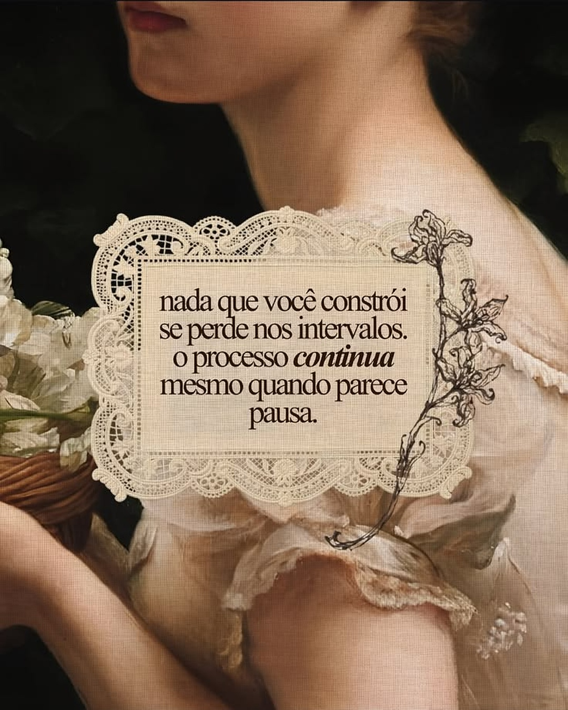

<!doctype html><html><head><meta charset="utf-8">
<style>
@font-face{font-family:"Playfair";src:url("fonts/playfair-regular.ttf")}
@font-face{font-family:"PlayfairBI";src:url("fonts/playfair-bold-italic.ttf")}
@font-face{font-family:"Caslon";src:url("../site/assets/fonts/LibreCaslonText-Regular.ttf")}
body{margin:0;background:#333}
.post{width:1080px;height:1350px;position:relative;overflow:hidden;margin:0 0 20px}
.post > img{position:absolute;inset:0;width:1080px;height:1350px}
.post svg{position:absolute;inset:0}
.frase{position:absolute;text-align:center;font-family:"Playfair";color:#2B1F19;letter-spacing:-.012em}
.frase b{font-family:"PlayfairBI";font-weight:normal}
.autora{display:block;margin-top:26px;font-family:"Caslon";font-size:18px;letter-spacing:.3em;color:#6B4E3D}
.at{position:absolute;left:0;right:0;bottom:44px;text-align:center;font-family:"Caslon";font-size:16px;letter-spacing:.26em;color:#F5ECE2;text-shadow:0 1px 6px rgba(40,20,10,.55)}
</style></head><body>
<script>
// Frase da Elisabeth Elliot num cartão de renda sobre a pintura (fundo que o Victor mandou, sem a assinatura original).
const C = { x:120, y:352, w:890, h:722, faixa:64 };   // cartão de renda
function recorte(x, y, w, h, r){
  const nx = Math.round(w / (2*r)), ny = Math.round(h / (2*r)), sx = w/nx, sy = h/ny;
  let d = `M${x},${y}`;
  for (let i = 0; i < nx; i++) d += ` a${sx/2},${r} 0 0 1 ${sx},0`;
  for (let i = 0; i < ny; i++) d += ` a${r},${sy/2} 0 0 1 0,${sy}`;
  for (let i = 0; i < nx; i++) d += ` a${sx/2},${r} 0 0 1 ${-sx},0`;
  for (let i = 0; i < ny; i++) d += ` a${r},${sy/2} 0 0 1 0,${-sy}`;
  const furos = [];
  for (let i = 0; i < nx; i++) furos.push([x + sx*(i+.5), y + 3], [x + sx*(i+.5), y + h - 3]);
  for (let i = 0; i < ny; i++) furos.push([x + 3, y + sy*(i+.5)], [x + w - 3, y + sy*(i+.5)]);
  return { d: d + " Z", furos };
}
const R = recorte(C.x, C.y, C.w, C.h, 13);
const ix = C.x + C.faixa, iy = C.y + C.faixa, iw = C.w - 2*C.faixa, ih = C.h - 2*C.faixa;
const petalas = [0,60,120,180,240,300].map(a => `<ellipse cx="0" cy="-6.5" rx="2.3" ry="5" transform="rotate(${a})"/>`).join("");
document.body.insertAdjacentHTML("beforeend", `
<div class="post" id="p1">
  
  <svg viewBox="0 0 1080 1350" width="1080" height="1350">
    <defs>
      <pattern id="flor" width="44" height="44" patternUnits="userSpaceOnUse" x="${C.x}" y="${C.y}">
        <g transform="translate(22 22)" fill="#000">${petalas}<circle r="1.8"/></g>
        <circle cx="0" cy="0" r="2.2"/><circle cx="44" cy="0" r="2.2"/><circle cx="0" cy="44" r="2.2"/><circle cx="44" cy="44" r="2.2"/>
        <circle cx="22" cy="0" r="1.2"/><circle cx="0" cy="22" r="1.2"/><circle cx="44" cy="22" r="1.2"/><circle cx="22" cy="44" r="1.2"/>
      </pattern>
      <mask id="renda" maskUnits="userSpaceOnUse" x="0" y="0" width="1080" height="1350">
        <path d="${R.d}" fill="#fff"/>
        <rect x="${C.x}" y="${C.y}" width="${C.w}" height="${C.h}" fill="url(#flor)"/>
        ${R.furos.map(([fx, fy]) => `<circle cx="${fx}" cy="${fy}" r="3.4" fill="#000"/>`).join("")}
        <rect x="${ix - 6}" y="${iy - 6}" width="${iw + 12}" height="${ih + 12}" fill="#fff"/>
      </mask>
      <filter id="sombra" x="-10%" y="-10%" width="120%" height="120%">
        <feDropShadow dx="2" dy="8" stdDeviation="9" flood-color="#1d120c" flood-opacity=".4"/>
      </filter>
      <filter id="papel" x="0" y="0" width="100%" height="100%">
        <feTurbulence type="fractalNoise" baseFrequency=".04" numOctaves="4" seed="6" result="n"/>
        <feColorMatrix in="n" type="matrix" values="0 0 0 0 .5  0 0 0 0 .4  0 0 0 0 .3  0 0 0 .22 0" result="m"/>
        <feComposite in="m" in2="SourceGraphic" operator="in"/>
      </filter>
      <filter id="tinta" x="-5%" y="-5%" width="110%" height="110%">
        <feTurbulence type="fractalNoise" baseFrequency=".8" numOctaves="1" seed="4" result="t"/>
        <feDisplacementMap in="SourceGraphic" in2="t" scale="1.6" xChannelSelector="R" yChannelSelector="G"/>
      </filter>
      <filter id="grao" x="0" y="0" width="100%" height="100%">
        <feTurbulence type="fractalNoise" baseFrequency=".9" numOctaves="2" seed="2"/>
        <feColorMatrix type="saturate" values="0"/>
        <feComponentTransfer><feFuncA type="linear" slope=".05"/></feComponentTransfer>
      </filter>
    </defs>
    <g filter="url(#sombra)"><g mask="url(#renda)">
      <rect x="${C.x - 20}" y="${C.y - 20}" width="${C.w + 40}" height="${C.h + 40}" fill="#EFE5D4"/>
      <rect x="${ix}" y="${iy}" width="${iw}" height="${ih}" fill="#F5EEE3"/>
      <rect x="${C.x - 20}" y="${C.y - 20}" width="${C.w + 40}" height="${C.h + 40}" fill="#000" filter="url(#papel)"/>
    </g></g>
    <g fill="none" stroke="#C7B494">
      <rect x="${C.x + 22}" y="${C.y + 22}" width="${C.w - 44}" height="${C.h - 44}" stroke-width="1.4"/>
      <rect x="${ix - 6}" y="${iy - 6}" width="${iw + 12}" height="${ih + 12}" stroke-width="1.6"/>
      <rect x="${ix + 6}" y="${iy + 6}" width="${iw - 12}" height="${ih - 12}" stroke-width="2.2" stroke-dasharray="0.1 7" stroke-linecap="round"/>
    </g>
    <!-- lírio a nanquim, cruzando a borda direita do cartão -->
    <g transform="translate(-42 72)"><g fill="none" stroke="#3A2A22" stroke-width="1.8" stroke-linecap="round" stroke-linejoin="round" filter="url(#tinta)">
      <path d="M985,338 C1000,430 978,520 1002,620 C1020,700 998,800 958,880 C938,925 900,958 868,985"/>
      <path d="M998,452 C1028,430 1056,426 1072,440 C1048,454 1022,460 998,452 Z M1000,452 C1025,447 1048,443 1068,440"/>
      <path d="M1000,566 C970,546 940,542 914,552 C944,568 974,572 1000,566 Z M998,565 C972,559 946,554 918,553"/>
      <path d="M1006,690 C1034,672 1058,672 1072,686 C1050,698 1028,700 1006,690 Z M1008,690 C1030,684 1050,682 1068,686"/>
      <path d="M968,860 C940,846 914,848 896,862 C920,874 946,874 968,860 Z"/>
      <path d="M985,342 C955,326 930,296 937,266 C953,284 970,304 987,322"/>
      <path d="M987,340 C995,306 1012,276 1036,268 C1032,296 1014,320 991,339"/>
      <path d="M985,341 C966,306 974,270 990,248 C1001,274 998,308 988,338"/>
      <path d="M987,322 L966,286 M988,320 L978,280 M990,320 L1000,278 M991,322 L1014,288" stroke-width="1"/>
      <path d="M930,930 C918,906 922,884 936,872 C946,890 944,912 930,930 Z"/>
      <path d="M940,908 L958,890" stroke-width="1"/>
    </g>
    <g fill="#3A2A22"><circle cx="966" cy="285" r="2.6"/><circle cx="978" cy="279" r="2.6"/><circle cx="1000" cy="277" r="2.6"/><circle cx="1014" cy="287" r="2.6"/></g></g>
    <rect width="1080" height="1350" filter="url(#grao)"/>
  </svg>
  <div class="frase" style="left:${ix + 34}px;width:${iw - 68}px;top:${iy + 40}px;font-size:49px;line-height:1.15">O jeito que você cuida da casa, o jeito que você organiza o seu tempo, o cuidado que você tem com a sua aparência e as coisas em que você gasta o seu dinheiro <b>falam alto</b> sobre aquilo em que você acredita.<span class="autora">ELISABETH ELLIOT</span></div>
  <div class="at">@REBECAFORTUNATO__</div>
</div>`);
</script>
</body></html>
